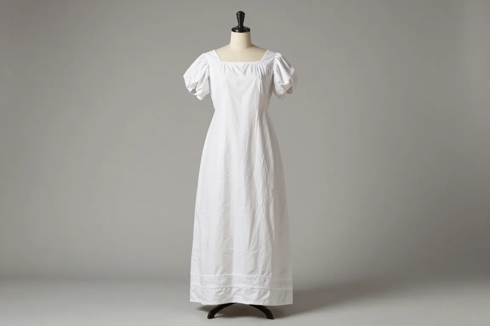

Empire line dress
fashion · 1795–1820 · also: Empire waist, Regency dress, Directoire dress, Neoclassical dress
The high-waisted dress after the French Revolution: a light, straight muslin gown that falls from a seam under the bust, like Greek dress.

Core thesis
After the Revolution, a dress drops the hoop and the stays and shows a light, straight line from a waist under the bust.
Design principles
- Set the waist seam directly under the bust, about 10 cm above the natural waist.
- Cut the skirt straight or slightly gored, and let it fall to the ankle in soft folds.
- Make the day dress in white or pale muslin of 30 to 90 g per square metre.
- Keep the neckline low and square or round, and the sleeve short and puffed.
- Draw the bodice in with a cord or a ribbon under the bust.
- Border the hem with a band of white embroidery, 15 to 30 cm deep.
- Add a spencer jacket or a shawl for warmth; do not add a layer of petticoats.
Anti-patterns
- Wide side hoops and a stiff cone bodice
- A waist at the natural line
- Heavy brocade with large flowers
- Dark, saturated, strong colour for a day dress
- A full train for a day dress
- Boned stays that show a rigid line
Palette
Lineage
- Echoes
- Georgian neoclassical manufacture, Neoclassicism
- Evolved into
- Crinoline and bustle dress, Victorian millinery
- Rebelled against
- Rococo court dress
Use it
SKILL.md · tokens.css · source JSON · open in the demo